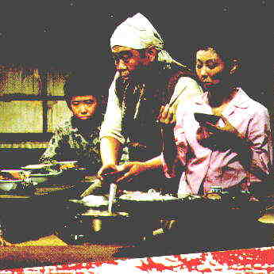

Dodes'ka den /B+,B+ Lord, we are short on great storytellers in current cinema! But that’s not master director Akira Kurosawa’s fault. He has always been a magical weaver of tales, whether in the pure linear fashion of the Seven Samurai or the very different perspective of Rashomon. So here’s Dodes’ka-den (1970) which, along with the more recent Dreams, is Kurosawa’s most expressionistic work. In this daring departure from the tried and true, the Kurosawa paints a series of ghetto portraits using a startling palette, both of color and internal emotion. Of the half dozen or so stories that crisscross through the
mud-paved byways of Dodes’ka-den, the two most abstract are especially involving, and
Kurosawa, the writer, director, artist, is at his creative peak. The centerpiece is the
tale of a mentally damaged young man who lives with his mother and creates an imaginary
world in which he is the conductor of a train that runs through the village dump.
"Dodes’ka-den"  A scant year after completing production of Dodes‘ka-den, Kurosawa attempted suicide. Dodes’ka den came at the end of a five-year gap in filmmaking for Kurosawa, following the mammoth Twentieth Century Fox film, Tora, Tora, Tora. From which he was fired for questioning the vision of mogul Darryl Zanuck. Then, after silence -- Dodes’ka-den. Consider the unsullied sense of hope that pervades this otherwise sad tale. Consider the upbeat palette the master paints with. It is as if he were desperately trying to extract the beauty from every situation. Wrestling with internal conflicts. Trying to survive an enormous depression imposed by the creative frustration of Tora, Tora, Tora. Was Kurosawa already walking a suicidal tightrope as he was making Dodes’ka-den? Was he mustering his creative energies to make a case for living? The source material is good, not great. The laserdisc version is presented by Voyager in its original aspect ratio (approximately 1.6:1) and runs 140 minutes, though the film originally ran 244 minutes The film moves quickly, cutting to different stories with perfect timing. The laserdisc sound of the monaural soundtrack is adequate, though the treble is closed in. Still, the lilting score by Toru Takematsu is highly effective. This was Kurosawa’s first color film, and the director, a fine painter, has a inspiring time with the medium. The laserdisc colors, vital to the Kurosawa scheme, are fully saturated. There is grain evident in some of the scenes, but it’s kept at an acceptable level. Voyager has produced a formidable gatefold jacket with an excellent essay about the film, a selection of stills and a wonderful example of Kurosawa the painter. The original jacket art brilliantly designed by Gordon Reynolds captures the energy and intersecting stories. Voyager has priced the two-disc CLV set at $69.95. |